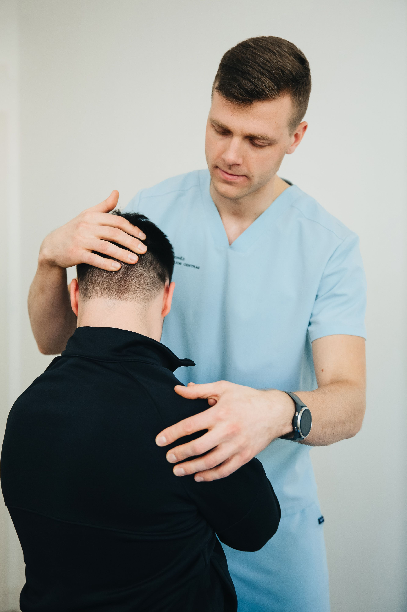

Dr Physio Raheb provides professional physiotherapy treatments focused on pain relief, injury recovery, and improving your quality of life.

Service Page
Home/Our Service
We care about you and your health and will do everything we can to ensure your treatment and recovery is successful.

Dry needling is used by physical therapists to reduce pain, inactivate trigger points, increase blood flow and to decrease muscular spasm and tightness.

Kinesio taping method is a therapeutic technique that is utilized by rehabilitation experts is used to change muscle tone, correct movement, improve posture, reduce pain, decrease fluid buildup and improves flow.

It is used to treat injured player so that may safely return to their activities and competitions. It is a multi-disciplinary approach that treat various injuries sustained through participation in sports so that athletes can regain mobility and return to sports.

Neurorehabilitation is a complex process that involves recovery from disorders of nervous system. Neurorehabilitation is used to treat conditions like stroke, cerebral palsy, spinal cord injuries, Parkinson’s disease, multiple sclerosis, etc.

It involves sort lever and high velocity thrusts applied chiropractic specialists to reduce pressure on joints and relieve pain and dysfunction.

It is process to treat variety of musculoskeletal conditions like back pain, neck pain, osteoarthritis, ligament sprains, muscle strains, fracture rehabilitation, pre and post-surgery rehabilitation. It is used to regain strength, mobility and flexibility of muscles and connective tissues.
This technique is used to reduce tightness and to restore normal flexibility of muscle. It is very useful technique especially when muscles become short and very tense.
Mulligan Manual therapy is used to treat pain and injuries like back pain, neck pain, upper and lower extremities injuries. It reduces pain and improves mobility and range of motion. Mulligan concepts include natural apophyseal glides (NAGS), Sustained Natural Apophyseal Glides (SNAGS) and Mobilization with Movement (MWM) to treat variety of musculoskeletal conditions.

This technique focuses on reducing tightness and shortness of muscle. It aims on reducing pain by easing tension in trigger points. It is often used to treat broad area of muscle so that tension can be reduced, and patient can enjoy pain free life.
Our physiotherapists are constantly investing time and resources researching the latest treatments, We diagnose the cause and provide you with the best possible treatment planl.
We are committed as primary healthcare professionals to help our clients resume their lifelong pursuit of health, fitness, and well-being.
We take a goal-oriented approach to healing. Whatever your goals might be we want to help you achieve them
We’ll provide hands-on treatment in the office and education you can take home with you, enabling you to become an active participant in your recovery and future physical health.
We’ll provide hands-on treatment in the office and education you can take home with you, enabling you to become an active participant in your recovery

Take the first step toward a healthier, pain-free life with expert physiotherapy care.
Book an Appointment
Dr Physio Raheb provides professional physiotherapy treatments focused on pain relief, injury recovery, and improving your quality of life.